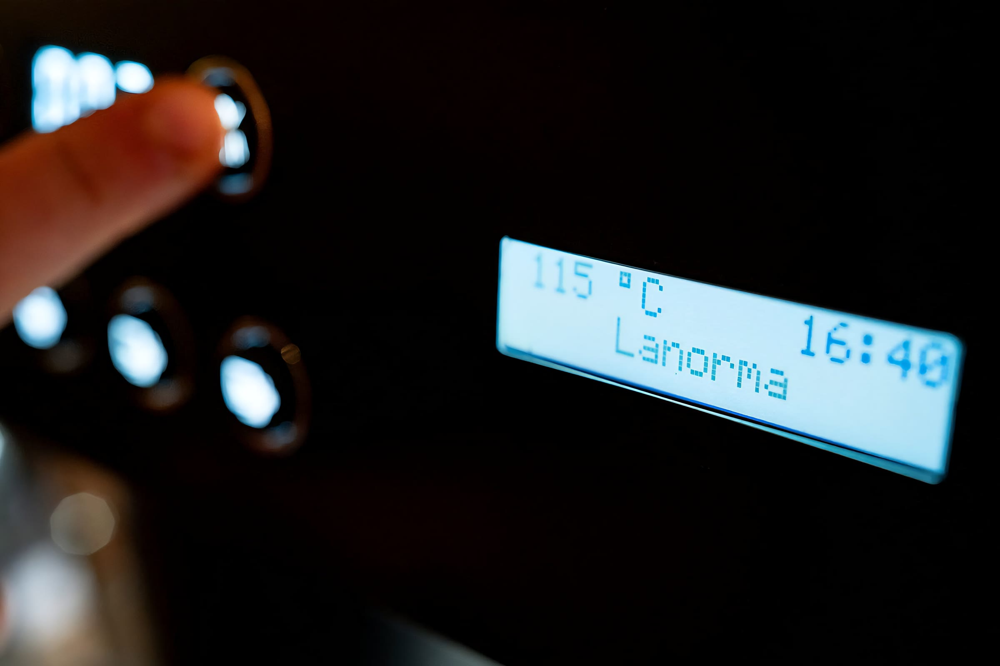
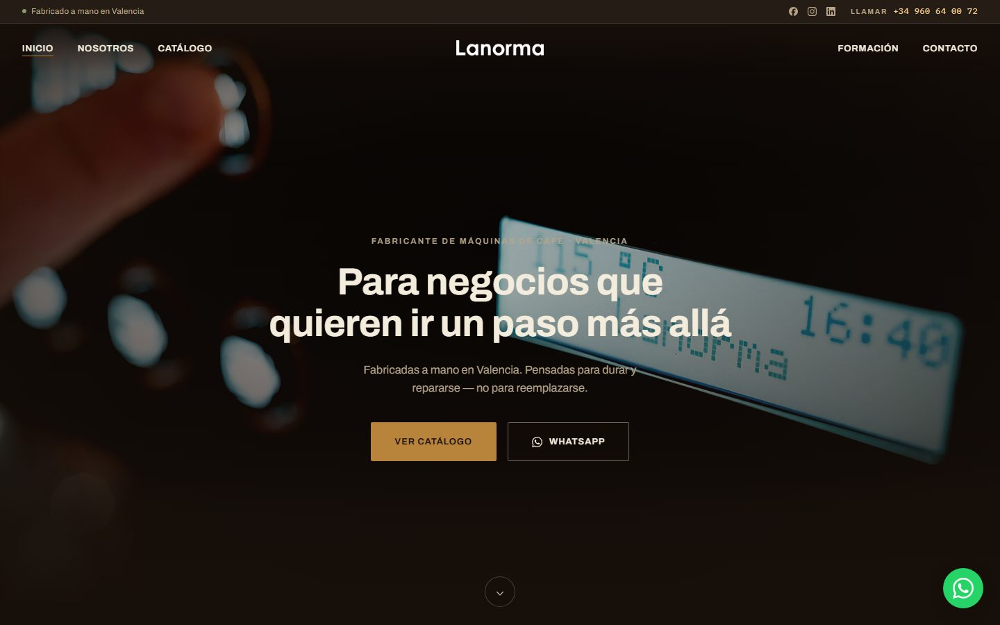
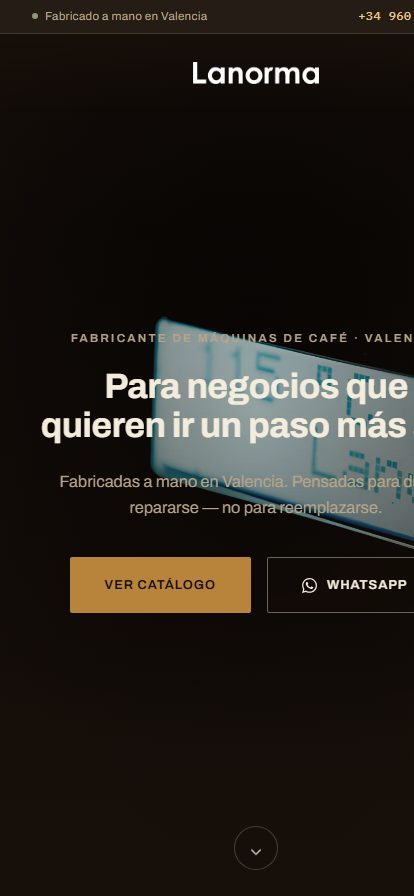
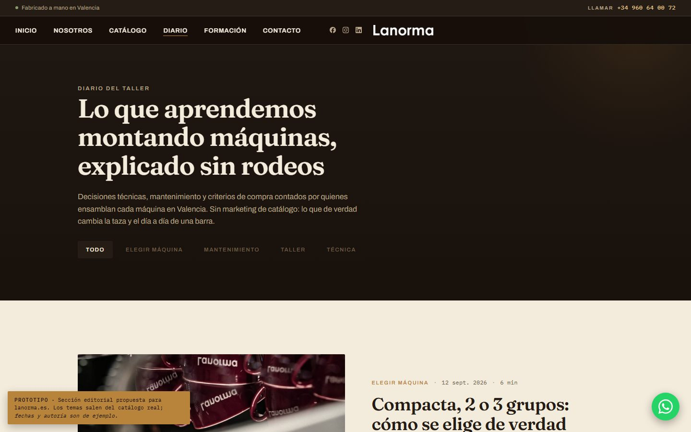
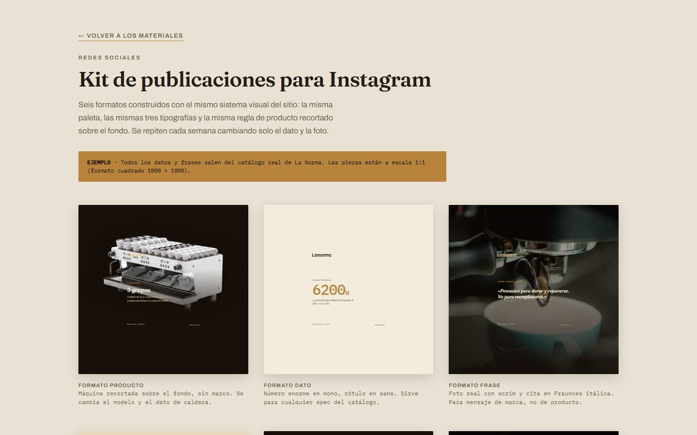
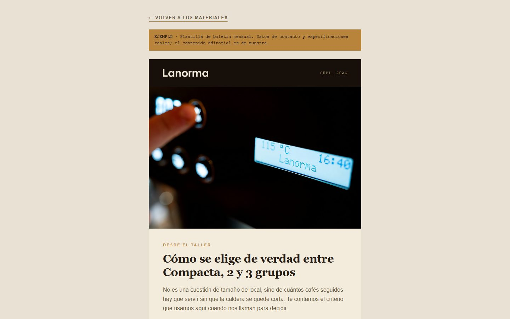

La web es la primera y la más visible. Las otras dos las veo cada día en el taller. Es una primera lectura, no un diagnóstico de toda la empresa: hay mucho de La Norma que todavía no conozco.
Lo que un cliente encuentra hoy cuando busca La Norma en el móvil — y lo que puede encontrar en su lugar.
Comprobado con las herramientas oficiales de auditoría. La mayoría de hosteleros y distribuidores entra desde el teléfono.
No es teoría: son dos sitios que ya existen y se pueden abrir en directo, ahora mismo, en este portátil.
No he pedido presupuesto a nadie, así que no voy a inventarme lo que cobraría una agencia. Lo que sí sé es que a mí no hay que explicarme qué lleva dentro una Ln1.


Cuatro páginas completas, con las fotos y las fichas técnicas reales de la Ln1 — no textos de relleno.
Una identidad no es una web bonita. Es lo mismo funcionando en todo lo demás, sin volver a diseñar nada desde cero.



Mirado el 28 de septiembre en Iberital, Ascaso y La Marzocco — empresas bastante más grandes que nosotros. No es un ranking ni una lista de deberes: es lo que se repite.
Esta parte no la saqué de internet. La veo cada día, desde dentro, con las manos en la máquina.
Cada máquina vendida lleva sus pegatinas. Hoy alguien se sienta y las va sacando una a una en el ordenador — en temporada alta, eso se come casi el día.
Los dos dependen siempre de una persona parada delante de la pantalla, repitiendo datos que ya existen en el pedido.
Llevamos tiempo intentando ordenarlo y no acaba de salir. No es falta de ganas: falta una forma controlada de hacerlo y de saber si se está siguiendo.
Lo que a mí me parece que tienen en común: atan a alguien con oficio a una tarea repetitiva. Si se pueden quitar de en medio o no, habría que mirarlo caso por caso.
La lista de pedidos entra, las etiquetas salen. Se diseña la plantilla una sola vez. Si no sirve, se vuelve a lo de antes sin haber cambiado nada.
Los dos son documentos que salen del pedido. DHL ofrece API para la etiqueta, la recogida y el seguimiento.
¿Dónde se registra hoy el pedido? y ¿con qué programa se hacen ahora las etiquetas? Sin saber eso, cualquier plazo que te diera sería inventado.
No te traigo un número de horas ahorradas, porque no lo he medido. Te traigo lo que veo y una forma barata de comprobarlo.
No hace falta comprometer todo a la vez. Cuando el sitio esté funcionando, se abren los demás frentes poco a poco.
Resolver la velocidad en móvil, publicar la ficha de la Ln 200 y abrir el canal de contacto para cotizaciones directas.
El taller real contado en LinkedIn, Instagram y correo: la ingeniería y el montaje que aquí sí se pueden enseñar.
Empezando por las etiquetas, con una prueba pequeña y reversible. Y detrás, el albarán y la expedición.
Te enseño todo esto en el móvil o en el portátil, en un descanso del taller. Sin compromiso alguno.